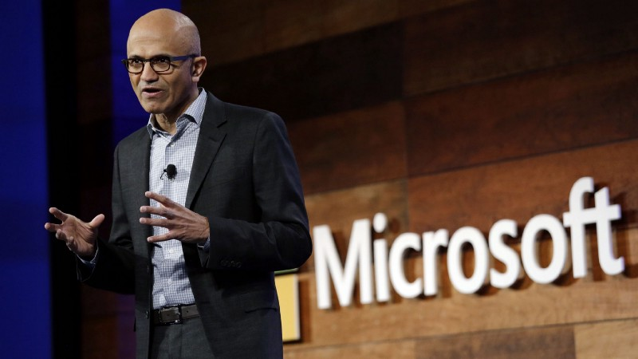
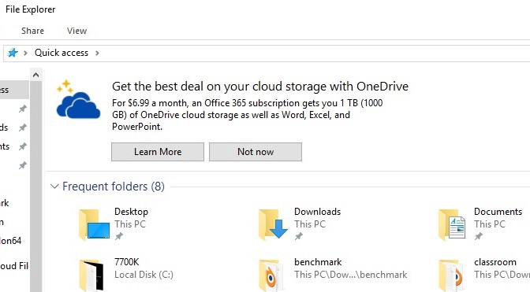

Please don't do it Github
Posted on Sat 02 June 2018 in Random

So Microsoft has been in talks with Github about a potential acquisition. There are several reasons why this is a terrible idea. Github is a pretty solid git repo hosting company, but it has a few core values that are in jeopardy here and I'm not sure Microsoft(or anyone) can acquire an entity like Github without severe repercussions.
Platform agnostic integrations
Github has a ton of super useful integrations that help make the life for developers a lot easier. Tools like appveyor, travis-ci, coverall, readthedocs, codacy are really useful and what's so great is you free to run them wherever you like. How can Microsoft make the business case to keep platform agnostic integrations that are aiding competitors? Maybe they won't ban them, but they may become very much second class citizens.
Don't believe me? Some examples of Microsoft not giving a single crap about anyone outside Microsoft products..
- Having to use Sky as there's no Skype for Business on Linux
- Sunrise to Outlook
- Accompli to Outlook
There are certainly more examples, but the day I need to sign into a Microsoft account to use Github or can only deploy to Azure platforms for build tools, will be the day I stop bothering to use it and this is a real concern I have.
The connection to open source
Github repos are by default open and if you wish to pay a monthly fee they can be made private, this alone has simply been amazing for open source and why Github has been the platform of choice for most open source projects. There's also a great issue tracker, wikis, support for markdown readmes etc. We've all benefitted from such a great setup for open source projects.
Microsoft has been doing good work in the open source space for the last few years, but anyone can see this is a recent development and purely for business reasons to regain much of the damage done in the 90s. When Microsoft attended Linux conferences they've come dressed as Darth Vader, the dark corporate entity against the rebels of open source. Now they're planning to purchase the entity hosting the largest repository of open source code that has ever existed? If the strong connection to open source goes, the coolness factor takes a hit and so does Github's community.
Coolness
Microsoft is not cool. God love them, they're trying their best, and I don't hate Microsoft at all. They've always given a shit about developers. I recently gave VSCode a whirl and was impressed. However, can you imagine Windows and Microsoft services getting hooked into Github all over the place? Collaborate with your open source developers over (ugh) Skype, auto-deploy your repo to Azure, or tie your Github account into your Linkedin one so recruiters can find more evidence you're perfect for that Java role because of some decade old Java repo from college. If anyone thinks this is insane I give you this monstrosity.

In the end, migrating to another git host(cough gitlab) might be a bit of a pain but it's really not that much work, mostly because git is so awesome. So Microsoft is really going to have to play this one carefully. I imagine a lot of Stallman's army will leave the moment Github agrees to such an acquisition, in fact Gnome has moved to Gitlab as they feel it matches them more in spirit. Can you imagine many open source projects aligning with Microsoft 'in spirit'? Open source as a movement naturally rebels against centralised systems, how Microsoft can purchase its way into the hearts of developers is a hard thing to see.
Edit: Update
So there's been a confirmation from Microsoft, color me skeptical. The best case scenario is Microsoft gives it the lightest possible touch. The question is if Microsoft's recent efforts with Github provide enough positive energy to maintain goodwill towards Github or if Gitlab becomes the de-facto FOSS git repo and let's be honest, the de-facto git repo hosting company of choice down the line.